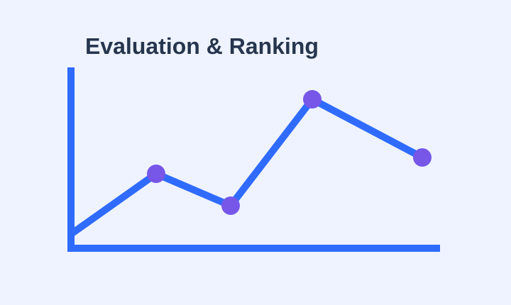
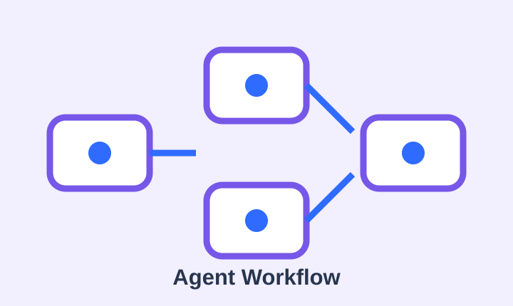

专业方向
人工智能专业。课表里有数学分析、概率论、算法这些基础课，也有深度学习和 NLP。
01 / ABOUT
写代码踩过坑之后才发现，很多东西光记住结论没用，得亲手跑一遍才算数。
人工智能专业。课表里有数学分析、概率论、算法这些基础课，也有深度学习和 NLP。
一般先照着文档跑通一个能用的版本，再回头去抠里面到底是怎么实现的。
最近在看大模型评测相关的东西，也在折腾一些智能体的小工具。
02 / STUDY
目前在学的主要是这几块。
深度学习、自然语言处理、优化方法，还有大模型相关的一些基础内容。
计算机网络、操作系统、数据库、数据结构这几门课，是后面做事的基础。
做一些小实验和项目，有时候也复现别人的工作，看看结果对不对得上。
03 / PROJECTS
一些最近在做或者做过的东西。

比较不同裁判在模型对战评测中的判断差异，也尝试研究怎样让最终排名更稳定。

把校园里的复杂事务拆成可以一步步推进的节点，每一步记录平台入口、材料、操作和完成状态，让智能体不只是回答问题，而是真的帮助把流程做完。
从 HTML、CSS 和原生 JavaScript 开始搭建，部署到 GitHub Pages 后，再从浏览器里观察真实的 HTTP 请求。
04 / CAMPUS
“先把东西做出来，再慢慢弄明白为什么。”
这学期的时间大多被课程填满。除了人工智能方向的内容，也在学计算机网络、操作系统、数据库、优化等课程。很多课一开始看起来互相独立，学到后面才慢慢发现它们会在实际项目里碰到一起。
课外会花不少时间做一些小项目和实验。有些是围绕大模型评测，有些是智能体应用，也会参加比赛，把一个想法从最开始的方案一点点做成能够运行的东西。
不写代码的时候也会在校园里走走。比起专门记录什么“大事”，更喜欢留下一些普通的片段：某门课突然听懂的一部分、项目终于跑通的一次，或者讨论之后冒出来的新想法。
BLOG
写了一点关于 HTML、CSS 和 HTTP 的笔记，算是把这两块知识接上了。